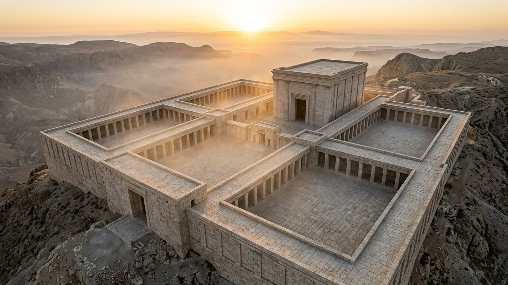
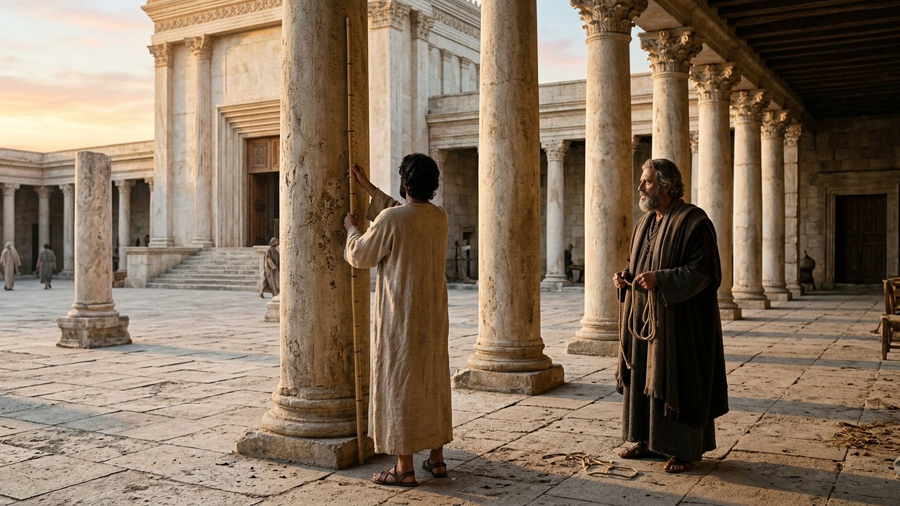
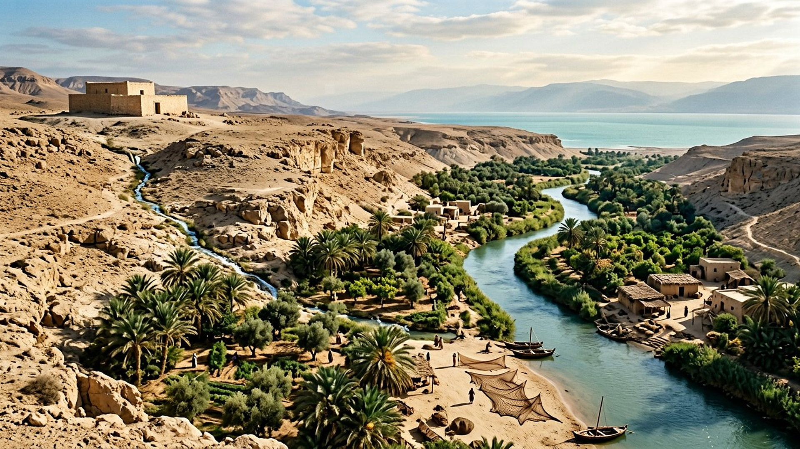

Salle 26 — Ézéchiel À VENIR
Le temple d'Ézéchiel : le plan mesuré et le fleuve de vie
« Dans les visions de Dieu, il me fit venir au pays d'Israël, et me déposa sur une montagne très élevée. » — Ézéchiel 40:2 (d'après Crampon 1904)
Reconstitution numérique — le temple de la vision, sur la haute montagne.
Neuf chapitres de mesures
La 25ᵉ année de l'exil — vers 573 avant notre ère —, Jérusalem est en ruines depuis 14 ans et Ézéchiel, prêtre déporté, reçoit la plus longue vision du livre : un guide tenant une canne à mesurer et un cordeau de lin le conduit, porte après porte, cour après cour, et mesure tout (Ézéchiel 40 à 48). Dimensions des portiques, des chambres, de l'autel ; puis le retour de la gloire de Jéhovah par la porte orientale ; puis un fleuve qui sort du seuil et assainit la mer Morte ; puis le pays partagé comme jamais il ne l'a été. Aucun livre de la Bible ne consacre autant de pages à un plan d'architecte.

L'explorateur de mesures
Choisissez un élément du plan. Une conversion est affichée : la « coudée longue » d'Ézéchiel vaut une coudée plus une largeur de main (40:5), soit environ 52,5 cm — une estimation, signalée comme telle.
Zoom profond : le temple sur la montagne
Approchez-vous du plan : l'enceinte, les cours et le sanctuaire, détail par détail.
Reconstitution numérique — zoom local, aucune image externe chargée.
Le fleuve qui fait revivre une mer morte
Au chapitre 47, de l'eau sort de sous le seuil du temple, vers l'est. Faites avancer le guide dans le fleuve, mille coudées après mille coudées :

Le terme du fleuve est la « mer » — la mer Morte, la plus salée du monde, où aucun poisson ne vit. La vision y annonce des eaux assainies, des pêcheurs d'En-Gaddi à En-Églaïm, et des arbres dont le fruit renaît chaque mois (47:8-12). Aucun fleuve de ce type ne coule aujourd'hui du mont du Temple vers la mer Morte : la salle classe donc cette vision À VENIR, sans aucune date.
Le fait gênant, puis les lectures
DONNÉE HISTORIQUE
Jamais construit tel quel
Le temple rebâti après l'exil, puis agrandi par Hérode, ne suit pas ce plan : dimensions, cours et enceinte diffèrent, et aucune fouille n'a retrouvé de structure conforme aux mesures d'Ézéchiel. Le texte lui-même donne une piste : « Décris ce temple à la maison d'Israël (…) afin qu'ils aient honte de leurs iniquités ; qu'ils mesurent le plan » (43:10) — un modèle à contempler avant d'être un chantier à ouvrir.
DÉBATTU
L'enceinte : coudées ou cannes ?
Pour l'enceinte totale (42:15-20), les traductions hésitent entre 500 coudées (environ 260 m de côté) et 500 cannes (environ 1,5 km — plus grand que la vieille ville). L'unité exacte change tout le plan ; les spécialistes débattent, et l'explorateur ci-dessus l'affiche au lieu de trancher en silence.
LECTURE PROPHÉTIQUE
Trois lectures, étiquetées
Un temple futur littéral, encore à venir (lecture retenue par de nombreuses traditions) ; un plan idéal offert aux exilés revenus, jamais appliqué à la lettre ; une image symbolique : la présence de Jéhovah au milieu d'un peuple purifié, aux normes de sainteté mesurées une à une. La salle ne départage pas les théologies ; elle constate le fait (jamais construit tel quel), classe le fleuve À VENIR, et laisse — comme en salle 24, du même prophète — le texte et le visiteur face à face.
Salle 24 : Ézéchiel, la vallée des ossements · Salle 15 : ce qui vient · Passer au verdict
Écouter la salle
Transcription de la narration
Bienvenue dans la salle du temple décrit par Ézéchiel. Le prophète, qui vivait en exil loin de sa ville, raconte une longue vision : un guide muni d'une canne à mesurer parcourt un vaste ensemble de cours et de portes, et en donne toutes les dimensions. Explorez ces mesures une à une : la cour intérieure, le sanctuaire, l'autel, et la grande enceinte, dont l'unité exacte fait encore débat chez les spécialistes. Puis faites avancer le guide dans le cours d'eau du dernier chapitre : l'eau monte des chevilles aux genoux, puis aux reins, et devient un fleuve profond bordé d'arbres. Cette salle présente le texte, ses mesures et les différentes lectures proposées, en distinguant ce qui est établi de ce qui reste discuté.